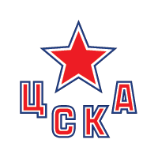

Статистика матча
2-е место на Западе, 28 очков в 19 матчах
8-е место на Востоке, 18 очков в 18 матчах
ЦСКА выиграл две последние встречи. В шести из семи последних матчей забито не больше пяти шайб; в трёх последних играх на арене ЦСКА одна из команд не забивала.
Потерь нет
Рыков, Кравцов
ЦСКА не проигрывает дома пять матчей подряд и входит в число самых надёжных команд лиги в обороне.
Разбор матча
В шести из семи последних встреч ЦСКА и Трактора было не больше пяти шайб, а гости забили больше двух лишь в одном из четырёх последних матчей.
ЦСКА — одна из лучших оборонительных команд лиги и не проигрывает дома пять игр подряд. У Трактора нет Рыкова и Кравцова, команда держится за восьмое место и вряд ли раскроется. Наша оценка «меньше 5.5» — около 66%.
Прогноз на матч ЦСКА — Трактор: форма команд
ЦСКА идёт вторым в Западной конференции: 28 очков после 19 матчей, столько же у лидирующего Локомотива. Армейцы забивают больше всех на Западе и одновременно входят в число самых надёжных команд лиги в обороне. Последние результаты неровные: победы над Нефтехимиком 4:1 и СКА 3:1, но и выездные поражения от Спартака 0:2 и Автомобилиста 1:5. Дома при этом ЦСКА не проигрывает пять матчей подряд.
Трактор — восьмой на Востоке с 18 очками после 18 игр. У челябинцев только три победы в восьми последних матчах, и лишь в одной из четырёх последних встреч они забили больше двух шайб. Из последних результатов — победы над Ак Барсом 3:1 и Сибирью 2:1, поражение от Нефтехимика 2:3 в овертайме и проигрыш Авангарду по буллитам.
Составы и потери
У ЦСКА, по данным источников, проблем с составом нет. У Трактора не сыграют Александр Рыков и Кравцов, что ещё сильнее ограничивает атакующий потенциал гостей, у которых и так проблемы с реализацией.
Очные встречи
ЦСКА выиграл две последние встречи с Трактором. Главное для нашей ставки — характер этих матчей: в шести из семи последних очных встреч было заброшено не больше пяти шайб, а в трёх последних играх на арене ЦСКА одна из команд вовсе не забивала.
Мотивация и тактика
ЦСКА борется с Локомотивом за первое место на Западе и дома традиционно играет от плотной обороны и прессинга. Трактор держится в зоне плей-офф на Востоке с минимальным запасом над Сибирью и не захочет раскрываться в гостях. Такой расклад обычно даёт осторожный хоккей с небольшим количеством опасных моментов: хозяева контролируют шайбу, гости ждут ошибок.
Варианты ставок: кто победит
Букмекеры видят фаворитом ЦСКА: победа в основное время — 1.70–1.72, ничья и победа Трактора — по 4.30. Тотал меньше 5.5 шайбы стоит 1.55, больше — 2.30. Мы оцениваем шанс «меньше» примерно в 66%.
- Основная ставка: тотал меньше 5.5 за 1.55
- Альтернатива: фора ЦСКА (−1) — 1.93
- Индивидуальный тотал Трактора меньше 1.5 — 2.20
Почему именно тотал, а не победа ЦСКА
Победа армейцев в основное время за 1.70 соответствует вероятности около 57% — это близко к нашей оценке и почти не даёт перевеса. Тотал меньше 5.5 за 1.55 выглядит выгоднее: он сыграет при большинстве типичных для этих команд счетов — 2:1, 3:1, 2:2, 3:2 и даже при победе Трактора с небольшим количеством шайб. Против ставки работают только сценарии с ранними голами, когда игра становится открытой, или пустые ворота в концовке при счёте 4:1. Учитывая, что Трактор в трёх из четырёх последних матчей забивал не больше двух шайб, а ЦСКА входит в число лучших по надёжности обороны команд лиги, такой сценарий маловероятен. Перевес небольшой, поэтому сумма ставки — умеренная.
Итог
Наш прогноз на матч ЦСКА — Трактор — тотал меньше 5.5 шайбы. Сильная оборона хозяев, проблемы гостей в атаке и низовая история очных встреч говорят в пользу сдержанного хоккея. Победа ЦСКА тоже вероятна, но коэффициент на неё почти не даёт перевеса.
Вопросы о матче
Кто победит в матче ЦСКА — Трактор?
Фаворит — ЦСКА: армейцы не проигрывают дома пять матчей подряд и выиграли две последние встречи с Трактором. Но мы ставим на тотал меньше 5.5.
Сколько шайб будет в матче ЦСКА — Трактор?
Мы ждём не больше пяти шайб: так было в шести из семи последних очных встреч. Ставка — тотал меньше 5.5 за 1.55.
Кто не сыграет за Трактор против ЦСКА?
Из-за травм пропустят матч Александр Рыков и Кравцов.
Во сколько начало матча ЦСКА — Трактор?
Игра пройдёт 28 октября на «ЦСКА Арене», начало в 19:30 по московскому времени.
Прогноз — оценка вероятности исхода, а не гарантия результата.